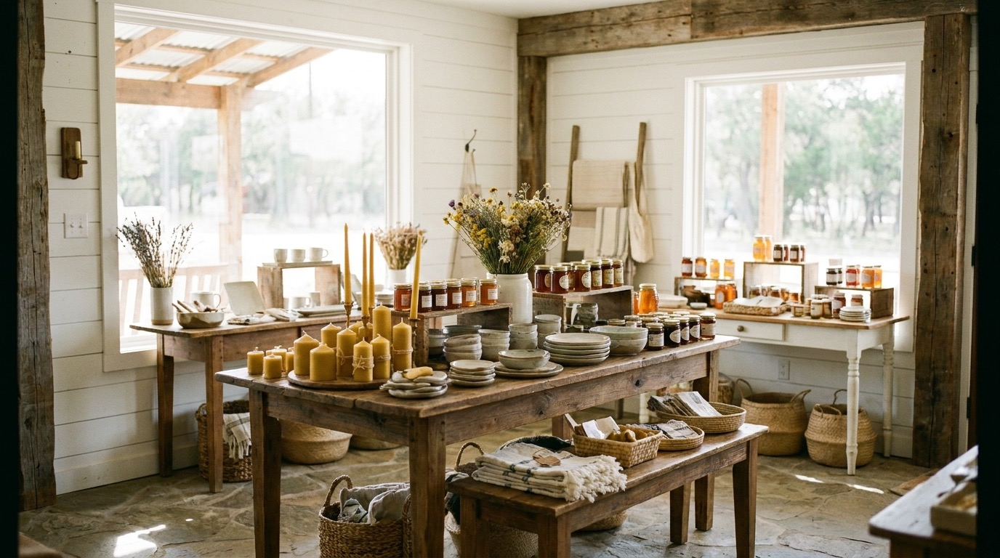
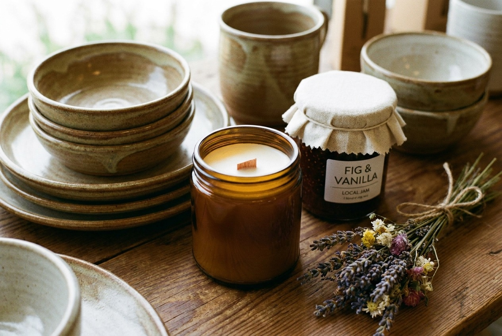

Unique gifts
The kind of present that doesn't look like everything else. Things you pick up, turn over, and decide on the spot. Good for a birthday, a thank you, or no reason at all.

Gift shop & home decor . Fredericksburg, Texas
The Sweet Lily sits at 102 E. Main St. in the middle of Fredericksburg. We keep our shelves full of unique gifts, home decor, and Fredericksburg Farms products. Come find something you didn't expect.
What you'll find
We're a small shop, so every shelf gets a second look before it goes out. Here's what people come in for.
The kind of present that doesn't look like everything else. Things you pick up, turn over, and decide on the spot. Good for a birthday, a thank you, or no reason at all.
Pieces for the table, the shelf, and the wall. Small touches that make a room feel finished. We change things out often, so it's worth coming back.
Local jams, salsas, sauces, and pantry goods made right here in the Hill Country. Easy to grab on the way out and easy to gift to someone back home.
Want to know if we have something in stock? Give us a call before you drive over.
Call the shopOn Main Street
Main Street in Fredericksburg is made for walking. People come for the weekend, park the car, and spend the afternoon drifting in and out of the shops. The Sweet Lily is one of those doors at 102 E. Main St. that people open without really planning to.
That's always been the charm of it. The trouble is, if you're planning a trip and looking us up first, there hasn't been much to find. This page fixes that. Now you can see who we are, where we sit on the street, and how to reach us before you ever leave home.
See you on Main Street.
A look inside
These are preview images for now. We'll swap in real photos of the shop and the shelves before launch.

Good to know
We're at 102 E. Main St., Fredericksburg, TX 78624, right in the middle of the Main Street shops. Open directions in Google Maps.
There's street parking along Main and the side streets, plus public lots a short walk away. Spots fill up on weekends, so come a little early if you can.
Unique gifts, home decor, and Fredericksburg Farms products. The mix changes through the year, so if you're after something specific, call ahead at (830) 383-1038 and we'll check.
Please see the hours block below. It's a placeholder for now, so give us a quick call to confirm before you head over.
Come see us
These times are a placeholder we'll set with you. Call to confirm before you visit.
Have a question about something you saw, or want to know if it's in stock? Drop us a line and we'll get back to you. The fastest way is always a call.